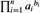

|
|
< Day Day Up > |
|
A greedy algorithm obtains an optimal solution to a problem by making a sequence of choices. For each decision point in the algorithm, the choice that seems best at the moment is chosen. This heuristic strategy does not always produce an optimal solution, but as we saw in the activity-selection problem, sometimes it does. This section discusses some of the general properties of greedy methods.
The process that we followed in Section 16.1 to develop a greedy algorithm was a bit more involved than is typical. We went through the following steps:
Determine the optimal substructure of the problem.
Develop a recursive solution.
Prove that at any stage of the recursion, one of the optimal choices is the greedy choice. Thus, it is always safe to make the greedy choice.
Show that all but one of the subproblems induced by having made the greedy choice are empty.
Develop a recursive algorithm that implements the greedy strategy.
Convert the recursive algorithm to an iterative algorithm.
In going through these steps, we saw in great detail the dynamic-programming underpinnings of a greedy algorithm. In practice, however, we usually streamline the above steps when designing a greedy algorithm. We develop our substructure with an eye toward making a greedy choice that leaves just one subproblem to solve optimally. For example, in the activity-selection problem, we first defined the subproblems Sij, where both i and j varied. We then found that if we always made the greedy choice, we could restrict the subproblems to be of the form Si.n+1.
Alternatively, we could have fashioned our optimal substructure with a greedy choice in mind. That is, we could have dropped the second subscript and defined subproblems of the form Si = {ak ∈ S : fi ≤ sk}. Then, we could have proven that a greedy choice (the first activity am to finish in Si), combined with an optimal solution to the remaining set Sm of compatible activities, yields an optimal solution to Si. More generally, we design greedy algorithms according to the following sequence of steps:
Cast the optimization problem as one in which we make a choice and are left with one subproblem to solve.
Prove that there is always an optimal solution to the original problem that makes the greedy choice, so that the greedy choice is always safe.
Demonstrate that, having made the greedy choice, what remains is a subproblem with the property that if we combine an optimal solution to the subproblem with the greedy choice we have made, we arrive at an optimal solution to the original problem.
We shall use this more direct process in later sections of this chapter. Nevertheless, beneath every greedy algorithm, there is almost always a more cumbersome dynamic-programming solution.
How can one tell if a greedy algorithm will solve a particular optimization problem? There is no way in general, but the greedy-choice property and optimal sub-structure are the two key ingredients. If we can demonstrate that the problem has these properties, then we are well on the way to developing a greedy algorithm for it.
The first key ingredient is the greedy-choice property: a globally optimal solution can be arrived at by making a locally optimal (greedy) choice. In other words, when we are considering which choice to make, we make the choice that looks best in the current problem, without considering results from subproblems.
Here is where greedy algorithms differ from dynamic programming. In dynamic programming, we make a choice at each step, but the choice usually depends on the solutions to subproblems. Consequently, we typically solve dynamic-programming problems in a bottom-up manner, progressing from smaller subproblems to larger subproblems. In a greedy algorithm, we make whatever choice seems best at the moment and then solve the subproblem arising after the choice is made. The choice made by a greedy algorithm may depend on choices so far, but it cannot depend on any future choices or on the solutions to subproblems. Thus, unlike dynamic programming, which solves the subproblems bottom up, a greedy strategy usually progresses in a top-down fashion, making one greedy choice after another, reducing each given problem instance to a smaller one.
Of course, we must prove that a greedy choice at each step yields a globally optimal solution, and this is where cleverness may be required. Typically, as in the case of Theorem 16.1, the proof examines a globally optimal solution to some subproblem. It then shows that the solution can be modified to use the greedy choice, resulting in one similar but smaller subproblem.
The greedy-choice property often gains us some efficiency in making our choice in a subproblem. For example, in the activity-selection problem, assuming that we had already sorted the activities in monotonically increasing order of finish times, we needed to examine each activity just once. It is frequently the case that by preprocessing the input or by using an appropriate data structure (often a priority queue), we can make greedy choices quickly, thus yielding an efficient algorithm.
A problem exhibits optimal substructure if an optimal solution to the problem contains within it optimal solutions to subproblems. This property is a key ingredient of assessing the applicability of dynamic programming as well as greedy algorithms. As an example of optimal substructure, recall how we demonstrated in Section 16.1 that if an optimal solution to subproblem Sij includes an activity ak, then it must also contain optimal solutions to the subproblems Sik and Skj. Given this optimal substructure, we argued that if we knew which activity to use as ak, we could construct an optimal solution to Sij by selecting ak along with all activities in optimal solutions to the subproblems Sik and Skj. Based on this observation of optimal substructure, we were able to devise the recurrence (16.3) that described the value of an optimal solution.
We usually use a more direct approach regarding optimal substructure when applying it to greedy algorithms. As mentioned above, we have the luxury of assuming that we arrived at a subproblem by having made the greedy choice in the original problem. All we really need to do is argue that an optimal solution to the subproblem, combined with the greedy choice already made, yields an optimal solution to the original problem. This scheme implicitly uses induction on the subproblems to prove that making the greedy choice at every step produces an optimal solution.
Because the optimal-substructure property is exploited by both the greedy and dynamic-programming strategies, one might be tempted to generate a dynamic-programming solution to a problem when a greedy solution suffices, or one might mistakenly think that a greedy solution works when in fact a dynamic-programming solution is required. To illustrate the subtleties between the two techniques, let us investigate two variants of a classical optimization problem.
The 0-1 knapsack problem is posed as follows. A thief robbing a store finds n items; the ith item is worth vi dollars and weighs wi pounds, where vi and wi are integers. He wants to take as valuable a load as possible, but he can carry at most W pounds in his knapsack for some integer W. Which items should he take? (This is called the 0-1 knapsack problem because each item must either be taken or left behind; the thief cannot take a fractional amount of an item or take an item more than once.)
In the fractional knapsack problem, the setup is the same, but the thief can take fractions of items, rather than having to make a binary (0-1) choice for each item. You can think of an item in the 0-1 knapsack problem as being like a gold ingot, while an item in the fractional knapsack problem is more like gold dust.
Both knapsack problems exhibit the optimal-substructure property. For the 0-1 problem, consider the most valuable load that weighs at most W pounds. If we remove item j from this load, the remaining load must be the most valuable load weighing at most W - wj that the thief can take from the n - 1 original items excluding j. For the comparable fractional problem, consider that if we remove a weight w of one item j from the optimal load, the remaining load must be the most valuable load weighing at most W - w that the thief can take from the n - 1 original items plus wj - w pounds of item j.
Although the problems are similar, the fractional knapsack problem is solvable by a greedy strategy, whereas the 0-1 problem is not. To solve the fractional problem, we first compute the value per pound vi/wi for each item. Obeying a greedy strategy, the thief begins by taking as much as possible of the item with the greatest value per pound. If the supply of that item is exhausted and he can still carry more, he takes as much as possible of the item with the next greatest value per pound, and so forth until he can't carry any more. Thus, by sorting the items by value per pound, the greedy algorithm runs in O(n lg n) time. The proof that the fractional knapsack problem has the greedy-choice property is left as Exercise 16.2-1.
To see that this greedy strategy does not work for the 0-1 knapsack problem, consider the problem instance illustrated in Figure 16.2(a). There are 3 items, and the knapsack can hold 50 pounds. Item 1 weighs 10 pounds and is worth 60 dollars. Item 2 weighs 20 pounds and is worth 100 dollars. Item 3 weighs 30 pounds and is worth 120 dollars. Thus, the value per pound of item 1 is 6 dollars per pound, which is greater than the value per pound of either item 2 (5 dollars per pound) or item 3 (4 dollars per pound). The greedy strategy, therefore, would take item 1 first. As can be seen from the case analysis in Figure 16.2(b), however, the optimal solution takes items 2 and 3, leaving 1 behind. The two possible solutions that involve item 1 are both suboptimal.
For the comparable fractional problem, however, the greedy strategy, which takes item 1 first, does yield an optimal solution, as shown in Figure 16.2(c). Taking item 1 doesn't work in the 0-1 problem because the thief is unable to fill his knapsack to capacity, and the empty space lowers the effective value per pound of his load. In the 0-1 problem, when we consider an item for inclusion in the knapsack, we must compare the solution to the subproblem in which the item is included with the solution to the subproblem in which the item is excluded before we can make the choice. The problem formulated in this way gives rise to many over-lapping subproblems-a hallmark of dynamic programming, and indeed, dynamic programming can be used to solve the 0-1 problem. (See Exercise 16.2-2.)
Give a dynamic-programming solution to the 0-1 knapsack problem that runs in O(n W) time, where n is number of items and W is the maximum weight of items that the thief can put in his knapsack.
Suppose that in a 0-1 knapsack problem, the order of the items when sorted by increasing weight is the same as their order when sorted by decreasing value. Give an efficient algorithm to find an optimal solution to this variant of the knapsack problem, and argue that your algorithm is correct.
Professor Midas drives an automobile from Newark to Reno along Interstate 80. His car's gas tank, when full, holds enough gas to travel n miles, and his map gives the distances between gas stations on his route. The professor wishes to make as few gas stops as possible along the way. Give an efficient method by which Professor Midas can determine at which gas stations he should stop, and prove that your strategy yields an optimal solution.
Describe an efficient algorithm that, given a set {x1, x2, ...,xn} of points on the real line, determines the smallest set of unit-length closed intervals that contains all of the given points. Argue that your algorithm is correct.
Show how to solve the fractional knapsack problem in O(n) time. Assume that you have a solution to Problem 9-2.
Suppose you are given two sets A and B, each containing n positive integers. You can choose to reorder each set however you like. After reordering, let ai be the ith element of set A, and let bi be the ith element of set B. You then receive a payoff of . Give an algorithm that will maximize your payoff. Prove that your algorithm maximizes the payoff, and state its running time.
|
|
< Day Day Up > |
|